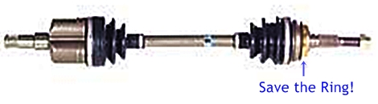
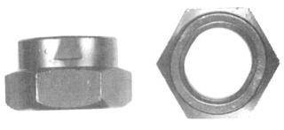
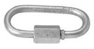
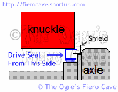
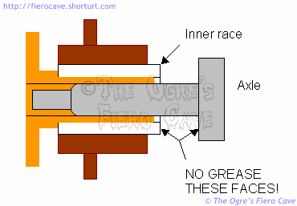

Go Home
Site Map
Go Home
Site Map
Ogre Does An Axle...
Since I had to replace the other one recently, I figured it was time to revisit this article.
The Constant Velocity shafts in Fiero aren't very difficult to work on but it certainly helps to know a few tricks.
Note: Replacing Axle? Keep the Shield on hub end CV. The Shield, called Deflector Ring in 22P and other Doc's from GM, protects hub bearing and stop thing, like small rope etc, wrapping up and binding between axle and knuckle. Most aftermarket axle won't come with Ring/Shield. Lost the ring? Not needed to drive car, just a safety item that most car makers uses...

Check Axle length...
Do Not trust parts makers/dealers! Measure Axle itself.
This is Very important when you buy replacement axles. All Length are compress measured tip to tip, meaning Tripot internal spring is compressed. Too short/long you will have problems, Too short then break the Tripot or Too long can break the transmission.
| Overall Compressed Length | ||
|---|---|---|
| AT D side | 21 in | 526 mm |
| AT P side | 27 1/16 in | 687.4 mm |
| MT D side | 22 5/8 in | 575 mm |
| MT P side | 38 15/16 in | 989 mm |
Source: AutoZone, All Years with Stock axles.
Axle Nut
WARNING: The axle nut will need to be turned with a wrench for all but the tip of the axle shaft and can get quite hot while spinning. Be careful handling the nut and the socket. The nut can burn you. The socket may get uncomfortably warm.
The 30mm locknut used on Fiero drive axles is intended to be a single use item. It should be replaced each time it's removed. The nut isn't likely to fall off. The axle can't come out even if it did, but if the nut comes loose you can out wear the hub and axle splines in no time. At that point you'll need a new hub and axle... (An axle with spline damage may not be accepted for core... That could cost you from $20-50 above the normal cost of the axle.)
I strongly recommend a new nut any time the thing is off. It's cheap insurance. ($3.00-$5.00) The nut is available at most parts stores. I won't reuse one. This nut wears considerably when you work with it and the heat of remove/replace messes with the hardness of the nut.
If you get a single click noise as you brake or accelerate then this nut may not be tight enough.
| Axle & Lug Nut Torque Specification | |
|---|---|
| Axle, New Nut | 200 ft-lbs |
| Axle, Used Nut | 70 ft-lbs (170 ft-lbs?) |
| Lugs, Steel Wheels | 80 ft-lbs |
| Lugs, Al Wheels | 105 ft-lbs |
(Torque spec source: Axle, Haynes Fiero repair book 79008. Lugs, Raybestos.)
Notes:
The Service Manual doesn't allow used nuts. Says "install washer and new hub nut and tighten to 250-285 Nm (183-208 lb.ft.)."
Source: 87 SM, page 4D-2, Step 7 in Install list. (Ignore drift pin... it won't work with solid rotors.)
I don't recommend using an used nut. The nut wears each time you install and remove it.
A note in
the forums indicates the correct torque is actually 170 ft-lbs for a used
nut.
To reach 200ft-lbs you'll need to be very strong or use about 3 feet of handle on the socket.
You really want the wheel on to remove and replace the nut. The suspension bounce can make it very difficult to tighten the nut. You could even knock the car off the jacks trying to do it with the wheel off. You'll get the best results if the car is on the ground with someone holding the brakes while you tighten the nut. Use the spare tire if Aluminum wheels don't have enough room to let the socket in.
Nut Part
Dorman/Motormite at any auto part store.

Part #s: 05170, 304970, 615-089 (# brand package, Dorman, Spindle-Tite!, etc.)
Thread: M20-1.5
Hex Size: 30mm
Height: 19mm
Application: FMC, GMC, Mazda
OE#: (GM) 14009990, (GM) 22636597, (Ford) N804199S, (Ford) N804199S191
Brand: Dorman - AutoGrade - Spindle-Tite!
1984-88 PONTIAC FIERO L4 - 2.5L (151 CID): GAS: FI: N: R Rear
1985-88 PONTIAC FIERO V6 - 2.8L (173 CID): GAS: FI: N: 9 Rear
Axle Removal
Trick One
There are a few ways to get the axle out. I prefer this one.
- Unfasten the brake line from the strut.
- Unfasten the brake caliper from its mount and tie it up so it's not dangling from the cable or hose.
- Remove the pinch bolt from the ball joint.
- Separate the ball joint.
The whole assembly can now be swung out to clear the end of the axle without messing with the tie rod.
If you push in on the axle, you'll compress the inner CV and gain additional clearance.
Some people prefer to reverse this a bit. They leave the brake caliper attached and separate the tie rod. If you do this be very careful you don't damage the hand brake cable or the brake hose.
Trick Two
Note... The axle often lets go easier if you can give the thing a quick pop instead of just prying on it.
A clip inside the transmission holds the axle. This can make extracting the axle a pain.
With stubborn axles, it may easier to pop the axle if you use 2 pry bars. Using 2 bars allows you to get an even load on the axle.
The clip isn't that strong but the thing usually exits the transmission easier if the axle is pried straight.
Be careful where and how you pry on the transmission case. Avoid creating spot loads on the case. Some areas can crack very easily if you pry directly on them. Use blocks of wood as needed to prevent this.
When using 2 pry bars, this can be tricky. Tape the block to the bar so you don't have to hold 4 things at once.
Yes, there is at least one tool for this... The one I've seen is a 2-armed thing that connects to a slide hammer. Most people don't do this often enough to need the tool.
Trick 2A
Another option for removing axle...
This needs two people; the helper needs to "catch" the axle.
For tools:
- You need a sledgehammer
- A piece of chain
- Something to secure the end. Locks, bolts, repair link (Figure 1), etc.
On tri-pot end, wrapped chain twice and secure it. (Figure 2)
On the other end of chain, wrapped the chain around a sledgehammer head twice (Not Handle) and secure it.
Carefully use the hammer like a slide hammer, use the hammer with short strokes. It should pop the axle.
|
 |
|
|
Figure 1 |
Figure 2 |

Seals
(On transmission end, Hub seal with Hub unit below...)
Always replace the seal in the transmission anytime the axle is replaced! If the seal is old, it's better to replace it even if you are reusing the same axles. Better to do it now than risk a leak after...
If you score the mounting hole for the seal, clean the hole with brake parts cleaner and then apply a thin coat of sealer. For most scratches I like a paint type sealer like Permatex Super 300 or Balkamp Aviation sealer. If it's a deep scratch then you may have to use RTV Silicone. Don't get sloppy with the Silicone! A little bit goes a long way for this use.
Removing
Removing a seal often is no fun. The left seal is the worst on automatic trans.
For the right axle, you can often just pry it out. But be careful not to damage anything. If it gives you trouble, then collapse the seal.
To start, remove the collar that protects the rubber seal. It's pressed into the seal. The metal is soft, you should be able to cave the side in then pop it out.
Then you'll be able to collapse the side of the seal and pull it out. Trust me... taking the collar out makes the seal much easier to remove.
For the left side on the automatic... there is only one spot I found where you could get a bite on the seal with the thing in the car. Unfasten the mud skirt and go at it with a long screwdriver from the back. The screwdriver will be against the cradle as far back as you can get it. Tap lightly until the seal quits. Don't pound it or you could chip/crack the case. It helps some if you collapse the inner part of the seal, where the rubber is held, and then cave in the outer part.
Installing
Coat outside seal and/or inside trans hole with Permatex Super 300 or High Tack sealant. It should fix any small scratches in trans hole. Plus When wet acts as a lube, easier to drive seal.
Driving the seals is a pain. The best driver I've used for these is a section of 2" Schedule 40 PCV pipe. A regular driver, like the one from Lisle, worked ok on the right seal but won't work for the left axle at all for auto trans. You have to use pipe or a special tool for that one because the transmission shaft protrudes thru the seal. The PCV pipe fit these seals very nicely and won't damage the guard.
If you can't get a perfectly straight shot at the seal don't worry either... Just cut the end of the pipe at a slight angle.
If you have a 2-3 pound mini sledge (AKA Drilling Hammer) use the side of the head. If you only have a small hammer, use a block of wood to spread the impact.
Selecting Replacement Axles
When buying new/rebuilt axles, it's fairly common to have the wrong axle in a box! Lay the 2 shafts side by side and make sure they match before turning in the core. (Yes, I have had this happen. Extremely annoying.)
Make sure new/rebuilt axles are the same length as the old ones! Never install an axle that is the wrong length. Too long and you could bind the inner CV. Too short and the inner CV will likely be torn apart. (This may not happen until you go over a large bump.)
Also check outer CV profile. It must match the original. That means it has to accept the guard ring as well as fit the seal and hub.
Don't worry if the CV boots are a different type as long as everything else is correct. In fact, when you can find them, you want the ones with driven on neoprene outer boots. They are better boots and clear the hand brake cable much better than the thermoplastic ones that are clamped at both ends.
There should be a metal guard on the outer CV that is just lightly pressed into place. This piece may need to be transferred to replacement axles. That guard protects the hub seal from dirt and so on. Try not to mangle it when you move it. It is better to work it off with a bunch of light tapping than try to get it off in a couple shots.
No, you can't use an axle from an automatic in a stick or the other way around. They won't fit.
Extending CV life
There's not much you can do that will affect the CV's but this might help.
Unless you live where speed bumps are common... Fiero outer CV joints spend nearly all of their time operating in over a small angle. If you give the wheels a few spins anytime the car is up on jacks it may help move the grease around in there. It might not help much but it sure won't hurt anything. When you do this, listen for noises and feel for any inaudible pops that may be early signs of CV failure.
Axles for other transmissions
There have been many threads in the forums about this. Use the search function and search for axles to find the others.
Hub units
The hub isn't hard to change. Again, anytime the axle is loose you should use a new axle nut.
One important note about buying hubs... the 84-87 hubs should come with a new seal loose in the box. This seal is driven into the knuckle to seal the axle. It provides additional protection for the hub cavity in the knuckle. Make sure the seal is in the box with the new hub. I don't think you can get it separately. (Most hub units come with this seal.) These hubs should also come with a large O ring, usually it's on the hub, that seals the front of the cavity in the knuckle. These seals are to prevent the hub from rusting solid in the knuckle. (The cavity isn't totally sealed. There is a drain hole below the axle seal.)
Before you knock the old one out the back, make note of its position and orientation. The new seal must be installed the same way.
The new seal is driven in from the front (hub) side. I strongly recommend a seal driver for this. You'll want the control the driver gives you to keep the seal straight.
Don't forget to grease the seal before installing the axle. I also coat the inside of the knuckle hole with grease to prevent rust. You don't need to gob it in, just coat things.
Torque specification for the three bolts that hold the hub to the knuckle is 62 lb.ft.(85 Nm) Source: 87 Fiero SM
Driving the axle seal on Hub end
Use of a regular seal driver will force you to remove the axle to do the job. There is another way...
Measure the depth of the seal in the knuckle! The new seal has to be driven to the same depth. Didn't take any measurements? Drive seal until Bearing will just clear seal. Seal should stick out backside some, about 1/4 of seal depth.
The axle usually has enough slack to push back out of the seal enough to work.
Knock the seal out the back of the knuckle, bend/squash it out of round and then pull it out the front.
To drive the new seal...
Get a section of 2" ID Schedule 40 PVC pipe and a straight connector. Glue the connector to the pipe if needed. Use the connector end to drive the seal.
A large hammer works better than a small one. Not because you need to beat the seal but because the big head spreads the load over the end of the pipe. I use a 3# mini sledge turned sideways for this.

No Grease Zone!

You should grease the splines a little to prevent them rusting into the hub but don't grease the areas shown above. You should also grease the axle seal to prevent wear.